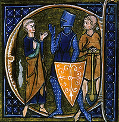
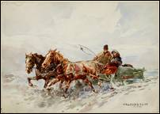
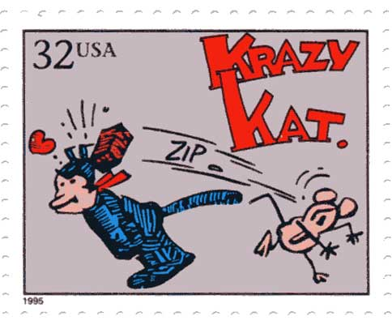
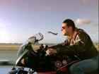
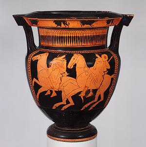
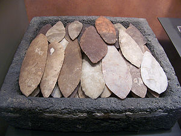

The stirrup is a reminder that any study in depth is a study in breadth.

Feudalism was based on a hierarchy of rank, giving rise to a static social order in
which every man knew his place.
A similar transformation from freehold farmer to plantation society resulted from the
Second Punic War, when Hannibal lay waste the Italian countryside, destroying landed
yeomanry. The slave-based plantation system that followed is thought to be a contributing
factor in Rome's subsequent decline.
The kinds of
interplay
between wheel, bicycle, and airplane are startling to those who have never thought about
them. Scholars tend to work on the archeological assumption that things need to be studied
in isolation. This is the habit of
specialism that quite naturally derives from typographic culture. When a scholar
like Lynn White ventures to make some interrelations, even in his own area of special
historical study, he causes a good deal of unhappiness among his merely specialist
colleagues. In his Medieval Technology and Social Change he explains how the feudal system was a social extension of the
stirrup. The stirrup first appeared in the West in the eighth century a.d., having
been introduced from the East. With the stirrup came mounted shock combat that called into
existence a new social class. The European cavalier class had already existed to be armed,
but to mount a knight in full armor required the combined resources of ten or more peasant
holdings. Charlemagne demanded that less prosperous freemen merge their private farms to
equip a single knight for the wars. The
pressure of the new war technology gradually developed classes and an economic system
that could provide numerous cavaliers in heavy armor. By about the year 1000 a.d. the old
word miles had changed from "soldier" to "knight."
Lynn White
has much to say, also, about horseshoes and horsecollars as revolutionary technology that
increased the power and extended the range and speed of human action in the early Middle
Ages. He is sensitive to the psychic and social implications of each technological
extension of man, showing how the heavy wheel-plow brought about a new order in the field
system, as well as in the diet of that age. "The Middle Ages were literally full of
beans."
The discovery of a major technology stimulates the development of cascading subsystems.
To come more
directly to our subject of the wheel, Lynn White explains how the evolution of the wheel
in the Middle Ages was related to the development of the horsecollar and the harness. The
greater speed and endurance of the horse was not available for cartage until the discovery
of the collar. But once evolved, this horse-harness led to the development of wagons with
pivoted front axles and brakes. The four-wheel wagon capable of hauling heavy loads was a
common feature by the middle of the thirteenth century. The effects on town life were
extraordinary. Peasants began to live in cities while going each day to their fields,
almost in the manner of motorized Saskatchewan farmers. These latter live mainly in the
city, having no housing in the country beyond sheds for their tractors and equipment.
With the
coming of the horse-drawn bus and streetcar, American towns developed housing that was no
longer within sight of shop or factory. The railroad next took over the development of the
suburbs, with housing kept within walking distance of the railroad stop. Shops and hotels
around the railroad gave some concentration and form to the suburb. The automobile,
followed by the airplane, dissolved this grouping and ended the pedestrian, or human,
scale of the suburb. Lewis Mumford contends that the car turned the suburban housewife
into a full-time chauffeur. Certainly the transformations of the wheel as expediter of
tasks, and architect of ever-new human relations, is far from finished, but its shaping
power is waning in the electric age of information, and that fact makes us much more aware
of its characteristic form as now tending toward the archaic.

The Russian sledge was used well into the twentieth century.
Before the
emergence of the wheeled vehicle, there was merely the abrasive traction
principle—runners, skids, and skis preceded wheels for vehicles, just as the
abrasive, semirotary motion of the hand-operated spindle and drill preceded the full, free
rotary motion of the potter's wheel. There is a moment of translation or
"abstraction" needed to separate the reciprocating movement of hand from the
free movement of wheel. "Doubtless the notion of the wheel came originally from
observing that rolling a log was easier than shoving it," writes Lewis Mumford in Technics
and Civilization. Some might object that log-rolling is closer to the spindle
operation of the hands than to the rotary movement of feet, and need never have got
translated into the technology of wheel. Under stress, it is more natural to fragment our
own bodily form, and to let part of it go into another material, than it is to transfer
any of the motions of external objects into another material. To extend our bodily
postures and motions into new materials, by way of amplification, is a constant drive for
more power. Most of our bodily stresses are
interpreted as needs for extending storage and mobility functions, such as occur,
also, in speech, money, and writing. All manner of utensils are a yielding to this bodily
stress by means of extensions of the body. The need for storage and portability can
readily be noted in vases, jars, and "slow matches" (stored fire).

See remarks on Irritation and Counter-Irritation in Chatper 7.
Incrementalism: mechanisms of 'irreducible complexity,' such as the movie
camera and its reel of light-sensitive film, evolved over time, in discrete
stages, from simpler ideas. The first iteration of the word processor was IBM's
'Magnetic Tape Selectric Typewriter.' Screen-based systems came at later stage.
Perhaps the
main feature of all tools and machines—economy of gesture—is the immediate
expression of any physical pressure which impels us to outer or to extend ourselves,
whether in words or in wheels. Man can say it with flowers or plows or locomotives. In
"Krazy Kat," Ignatz said it with bricks.
One of the
most advanced and complicated uses of the wheel occurs in the movie camera and in the
movie projector. It is significant that this most subtle and complex grouping of wheels
should have been invented in order to win a bet that all four feet of a running horse were
sometimes off the ground simultaneously. This bet was made between the pioneer
photographer Edward Muybridge and horse-owner Leland Stanford, in 1889. At first, a series
of cameras were set up side by side, each to snap an arrested moment of the horse's hooves
in action. The movie camera and the projector were evolved from the idea of reconstructing
mechanically the movement of feet. The wheel, that began as extended feet, took a great
evolutionary step into the movie theater.
A classic break-barrier phenomenon.
A kind of reversal of evolution. Just as we push off against the ground with our feet
when we walk, fish use the muscles on the sides of their bodies to push against the water;
while the pitched blades of high bypass fan jets push against the air for propulsion.
By an
enormous speed-up of assembly-line segments, the movie camera rolls up the real world on a
spool, to be unrolled and translated later onto the screen. That the movie re-creates
organic process and movement by pushing the mechanical principle to the point of reversal
is a pattern that appears in all human extensions, whatever, as they reach a peak of
performance. By speed-up, the airplane rolls up the highway into itself. The road
disappears into the plane at take-off, and the plane becomes a missile, a self-contained
transportation system. At this point the
wheel is reabsorbed into the form of bird or fish that the plane becomes as it takes to
the air. Skin-divers need no path or road, and claim that their motion is like that
of bird flight; their feet cease to exist as the progressive, sequential movement that is
the origin of rotary action of the wheel. Unlike wing or fin, the wheel is lineal and
requires road for its completion.
The preference of fighter pilots for
motorcycles, with their low weight-to-power ratio, suggests the part played by the bicycle
in the evolution of the airplane.

Topgun ace on a Kawasaki
Incrementalism: The bicycle, analogous to the evolution of bipeds from
quadrupeds, was an important intermediate step between four-wheeled vehicles and
airplanes; just as airplanes must move forward to prevent stalling, a bicycle must
maintain forward momentum for balance.
It was the
tandem alignment of wheels that created the velocipede and then the bicycle, for with the
acceleration of wheel by linkage to the visual principle of mobile lineality, the wheel acquired a new
degree of intensity. The
bicycle lifted the wheel onto the plane of aerodynamic balance, and not too indirectly
created the airplane. It was no accident that the Wright brothers were bicycle
mechanics, or that early airplanes seemed in some ways like bicycles. The transformations of technology have the
character of organic evolution because all technologies are extensions of our physical
being. Samuel Butler raised great admiration in Bernard Shaw by his insight that
the evolutionary process had been fantastically accelerated by transference to the machine
mode. Shaw, however, was happy to leave the matter in this delightfully opaque state.
Butler, himself, had at least indicated that machines were given vicarious powers of
reproduction by their subsequent impact upon the very bodies that had brought them into
being by extension. Response to the increased power and speed of our own extended bodies
is one which engenders new extensions. Every technology creates new stresses and needs in
the human beings who have engendered it. The new need and the new technological response
are born of our embrace of the already existing technology—a ceaseless process.
clown: of Scandinavian origin, akin to
Icelandic klunni, clumsy person.
Integral man… the clown, the lover, and the
artist.
The acrobatic bicyclist is a specialist who performs a mechanical tour de force
at the expense of his humanity. (For William Blake it was the spinning jenny that
signified the absurdity of the mechanical.)
Those
familiar with the novels and plays of Samuel Beckett need not be reminded of the rich
clowning he engenders by means of the bicycle. It is for him the prime symbol of the
Cartesian mind in its acrobatic relation of mind and body in precarious imbalance. This
plight goes with a lineal progression that mimics the very form of purposeful and
resourceful independence of action. For Beckett, the integral being is not the acrobat but
the clown. The acrobat acts as a specialist, using only a limited segment of his
faculties. The clown is the integral man who mimes the acrobat in an elaborate drama of
incompetence. Beckett sees the bicycle as the sign and symbol of specialist futility in
the present electric age, when we must all interact and react, using all of our faculties
at once.
Like Freud, Marshall McLuhan psychoanalyzed culture and discovered deep meaning in
'epiphenomena' like nursery rhymes. Humpty-Dumpty's fall symbolized both the allure and
danger of the mechanical tour de force to integral man.
Humpty-Dumpty
is the familiar example of the clown unsuccessfully imitating the acrobat. Just because
all the King's horses and all the King's men couldn't put Humpty-Dumpty together again, it
doesn't follow that electromagnetic automation couldn't have put Humpty-Dumpty back
together. The integral and unified egg had no business sitting on a wall, anyway. Walls
are made of uniformly fragmented bricks that arise with specialisms and bureaucracies.
They are the deadly enemies of integral beings like eggs. Humpty-Dumpty met the challenge
of the wall with a spectacular collapse.
Humpty-Dumpty and the wall were destined to meet. Man cannot escape his extensions.
The same
nursery rhyme comments on the consequences of the fall of Humpty-Dumpty. That is the point
about the King's horses and men. They, too, are fragmented and specialized. Having no unified vision of the whole, they are
helpless. Humpty-Dumpty is an obvious example of integral wholeness. The mere existence of
the wall already spelt his fall. James Joyce in Finnegans Wake never ceases to
interlace these themes, and the title of the work indicates his awareness that
"a-stone-aging" as it may be, the
electric age is recovering the unity of plastic and iconic space, and is putting
Humpty-Dumpty back together again.

Greek column-krater (bowl for mixing wine and water),
Classical, circa. 430 b.c.
In linguistics ablativecase marks motion away from something (extension). E.g., Chores done, he
drove to the golf course that afternoon.
The potter's
wheel, like all other technologies, was the acceleration of an existing process. After
nomad food-gathering had shifted to sedentary plowing and seeding, the need for storage
increased. Pots were needed for more and more purposes. Men turned their powers to
changing the forms of things by cultivation. Change to special production in local areas
created the need for exchange and for transport. For this purpose sledges were used in
Northern Europe before 5000 b.c., and human porters and pack-bearing animals preceded
sledges naturally. The wheel under the sledge was an accelerator of feet, not of hand.
With this acceleration of the feet came the need for road, just as with the extension of
our backsides in the form of chair, came the need for table. The wheel is an ablative
absolute of feet, as chair is the ablative absolute of backside. But when such ablatives
intrude, they alter the syntax of society. There is no ceteris paribus in the world
of media and technology. Every extension or
acceleration effects new configurations in the over-all situation at once.
ceteris paribus: all other things being
equal.
Aggression and a new level of violence as a way of life are the inevitable
byproducts of urban specialization. E.g. the Roman Empire, Incan civilization and the
Hundred Years' War.
The wheel
made the road, and moved produce faster from fields to settlements. Acceleration created
larger and larger centers, more and more specialism, and more intense incentives,
aggregates, and aggressions. So it is that the wheeled vehicle makes its appearance at
once as a war chariot, just as the urban center, created by the wheel, makes its
appearance as an aggressive stronghold. No further motivation than the compounding and
consolidating of specialist skills by acceleration of the wheel is needed to explain the
mounting degree of human creativity and destructiveness.
Lewis
Mumford calls this urbanization "implosion," but it was really an explosion. Cities were made by the fragmenting of pastoral
modes. The wheel and the road expressed and advanced this explosion by a
radiational or center-margin pattern. Centralism depends on margins that are accessible by
road and wheel. Maritime power does not assume this center-margin structure, and neither
do desert and steppe cultures. Today with jet and electricity, urban centralism and
specialism reverse into decentralism and interplay of social functions in ever more
nonspecialist forms.
The wheel
and the road are centralizers because they accelerate up to a point that ships cannot. But
acceleration beyond a certain point, when it occurs by means of the automobile and the
plane, creates decentralism in the midst of the older centralism. This is the origin of
the urban chaos of our time. The wheel, pushed beyond a certain intensity of movement, no
longer centralizes. All electric forms whatsoever have a decentralizing effect, cutting
across the older mechanical patterns like a bagpipe in a symphony. It is too bad that Mr.
Mumford has chosen the term "implosion" for the urban specialist explosion.
"Implosion" belongs to the electronic age, as it belonged to the prehistoric
cultures. All primitive societies are implosive, like the spoken word. But
"technology is explicitness," as Lyman Bryson has said; and explicitness, or
specialist extension of functions, is centralism and explosion of functions, and not
implosion, contraction or simultaneity.
An airline
executive who is much aware of the implosive character of world aviation asked a
corresponding executive of each airline in the world to send him a pebble from outside his
office. His idea was to build a little cairn of pebbles from all parts of the world. When
asked, "So what?" he said that in one spot one could touch every part of the
world because of aviation. In effect, he had hit upon the mosaic or iconic principle of simultaneous
touch and interplay that is inherent in the implosive speed of the airplane. The
same principle of implosive mosaic is even more characteristic of electric information
movement of all kinds.
Centralism
and extension of power by wheel and written word to the margins of empire are creative of
the direct force, outside and external, to which men do not necessarily submit their
minds. But implosion is the spell and incantation of the tribe and the family, to which
men readily submit. Under technological explicitness, even of the urban centralist
structure, some men managed to break out of the charmed circle of tribal magic. Mumford
cites the words of the Chinese philosopher Mencius as a comment on this situation:
When men are subdued by force they do not submit
in their minds, but only because their strength is inadequate. When men are subdued by
power in personality they are pleased to their very heart's core and do really submit.

Aztec Sacrificial Knife Blades. Like the Greek city states, the Aztecs were constantly at
war. Peaceful co-existance was a thing unknown. Survival of the fittest was a zero sum
game.
As the
expression of new specialist extensions of our bodies the congregating of people and
supplies in centers by wheel and road called for endless reciprocal expansion in a
spongelike action of intake and output, which has entrapped all urban structures
everywhere in place and time. Mumford observes: "If I interpret the evidence
correctly, the cooperative forms of urban polity were undermined and vitiated from the
outset by the destructive death-oriented
myths which attended … the exorbitant expansion of physical power and
technological adroitness." To have such power by extension of their own bodies, men
must explode the inner unity of their beings into explicit fragments. Today, in an age of
implosion, we are playing the ancient explosion backward, as on a film. We can watch the
pieces of man's being coming together again in an age that has so much power that the
all-destructive use of it appears meaningless, even to the dim and skew of wit.
Powerful urban aggregates re-enacted the myth of
Cain and Able on a macro scale.
Theories that Meso-American cities were influenced by Europe are moot; they evolved
independently as extensions of universal human faculties.
Historians
see the forms of the great cities in the ancient world as manifesting all facets of human
personality. Institutions, architectural and administrative, as extensions of our physical
beings necessarily tend toward world-wide similarities. The central nervous system of the
city was the citadel which included the great temple and palace of the king, invested with
the dimensions and iconography of power and prestige. The extent to which this central
core could extend its power safely depended on its power of acting at a distance. Not
until the alphabet appeared, together with papyrus, could the citadel extend itself very
far in space. (See the chapter on Roads and Paper Routes.) The ancient city, however,
could appear as quickly as specialist man could separate his inner functions in space and
architecture. To say that the cities of the Aztecs and the Peruvians resembled European
cities is only to say that they shared and extended the same faculties in both regions.
The question of direct physical influence and imitation as if by diffusion becomes
irrelevant.